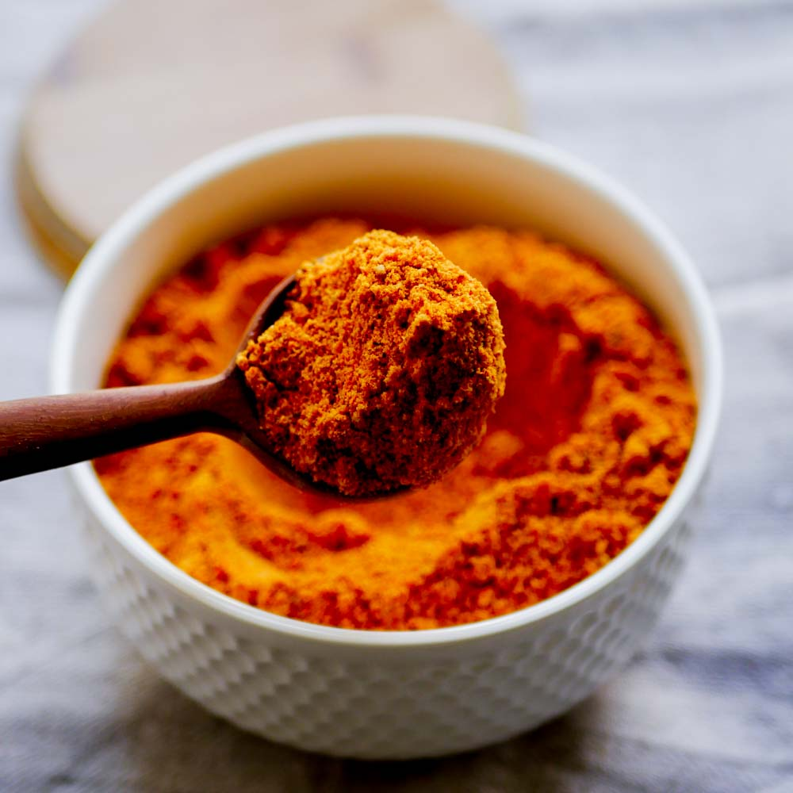
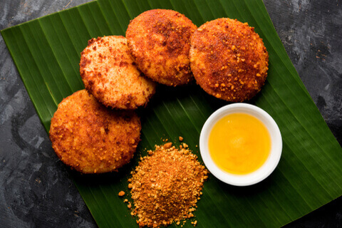
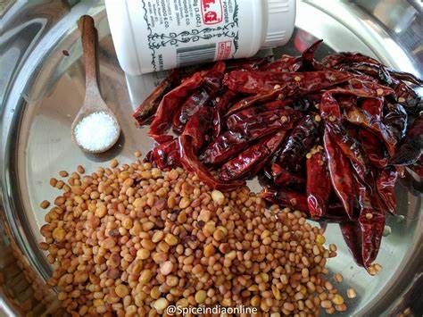

Idli Podi

What is Idli Podi
Idli Podi is also known as Gunpowder or Idli Milagai Podi is a spicy and flavorful
side dish for idli and dosa. It is a dry powder made using a combination of roasted lentils,
dried garlic, red chilies, sesame seeds, hing and other spices. It is known by different names
which varies in each household like Idli Podi, Idli Milagai Podi, Chutney Powder, Gun Powder,
Idli Karam Podi, thool etc.

How to make?
- Choose the perfect amount of Ingredients.
- Always use fresh Ingredients, clean it and use.
- Roasting each ingredient till desired stage is the key for perfect tasting idli podi.
Always use low flame or low medium flame while roasting

List of Ingredients
|
Ingrediants |
Measurements |
| 1 |
Whole Urid dal |
1 cup |
| 2 |
Chana dal |
1/2 cup |
| 3 |
Red chillies |
30g |
| 4 |
Sesame Seeds |
1/2cup |
| 5 |
Garlic |
20g |
| 6 |
Salt |
20g |
| 7 |
Hing |
3g |
Check this link
for additional informations.